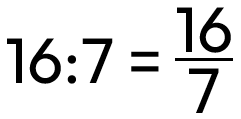
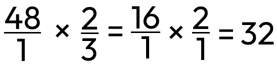

Poměr
Informace
poměr mohu krátit do základního tvaru jako zlomek (2:6 = 1:3)
Příklad
Ředění barvy v poměru 3:2
Kolik vody mám přimíchat do barvy, jestliže poměr barvy a vody je 3:2?
3:2
- 3 hrníčky barvy
- 2 hrníčky vody
6:4
- 6 hrníčků barvy (+3)
- 4 hrníčky vody (+2)
9:6
- 9 hrníčků barvy (+3 od předchozího)
- 6 hrníčků vody (+2 od předchozího)
...
Příklad
Jehličnaté a listnaté stromy
7:3, 21:9, 28:12, 700:300
| Jehličnaté | Listnaté | Celkem |
|---|---|---|
|
7 21 28 700 |
3 9 12 300 |
10 30 40 1000 |
Převrácený poměr
- k 7:30 je 30:7
- k 2:1 je 1:2
- k 8:3 je 3:8
Rozdělit v poměru
I.
Příklad
Rozděl v poměru 3:2 číslo 15
Rozděl 15 jablek Adéle a Michalovi jablka tak, aby platil poměr 3:2.
| Adéla | Michal | Celkem |
|---|---|---|
|
3 6 9 |
2 4 6 |
5 10 15 |
Adéla dostane 9, Michal 6.
II.
Rozděl 15 jablek Adéle a Michalovi jablka tak, aby platil poměr 3:2.
celkem 5 dílů (3 + 2)
celek 15 jablek
1 díl 15:5 = 3 jablka
3 díly Adéla 3 × 3 = 9 jablek
2 díly Michal 2 × 3 = 6
jablek
Adéla dostane 9, Michal 6.
Změnit číslo v poměru
„Změnit číslo 5 v poměru 1:2 znamená vynásobit toto číslo zlomkem 1/2.“
Změň číslo 48 v poměru 2:3
